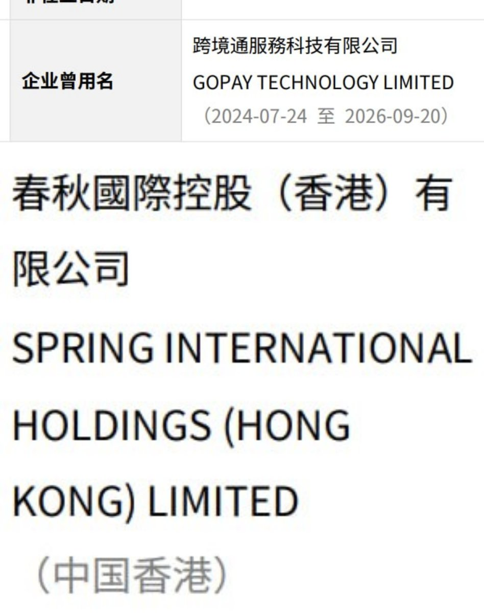
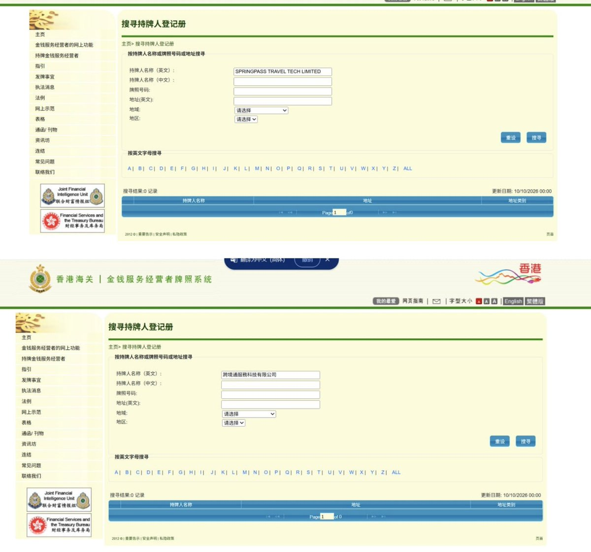

我怀疑那个3个之前在上海被抓的跟这个有关系，之前急着把主体外迁，感觉收到风声怕不是要跑路了🤣
我在MSA（新加坡金融管理局）和MOS（香港海关金钱服务经营者）都没有查到牌照信息，确认为无牌经营
在香港：无牌经营属于犯罪，一经定罪，最高可被判处罚款 1,000,000 港元及监禁 2 年
在新加坡：根据新加坡《支付服务法》（Payment Services Act）及金融服务和市场法（FSM）相关规定，未经许可无牌照在新加坡从事受监管的支付或数字代币服务，将面临严厉的刑事与行政处罚：
个人无牌照罚款：最高可被处以 12.5万新元 罚款；定罪后若持续违法，可按每日追加 1.25万新元 罚款，并可能面临最长 3年 的监禁。 公司无牌照罚款：公司违法的罚款及每日追加罚金上限将加倍（即最高 25万新元 罚款，每日追加最高 2.5万新元 罚款）
相关执法背景：新加坡金融管理局（MAS）在最新发布的执法报告中严厉打击无牌从事受监管活动的行为；例如在2025年至2026年期间，因涉及无牌经营及金融犯罪等被定罪的多名人士均受到了相应的监禁或高额罚款


我在MSA（新加坡金融管理局）和MOS（香港海关金钱服务经营者）都没有查到牌照信息，确认为无牌经营
在香港：无牌经营属于犯罪，一经定罪，最高可被判处罚款 1,000,000 港元及监禁 2 年
在新加坡：根据新加坡《支付服务法》（Payment Services Act）及金融服务和市场法（FSM）相关规定，未经许可无牌照在新加坡从事受监管的支付或数字代币服务，将面临严厉的刑事与行政处罚：
个人无牌照罚款：最高可被处以 12.5万新元 罚款；定罪后若持续违法，可按每日追加 1.25万新元 罚款，并可能面临最长 3年 的监禁。 公司无牌照罚款：公司违法的罚款及每日追加罚金上限将加倍（即最高 25万新元 罚款，每日追加最高 2.5万新元 罚款）
相关执法背景：新加坡金融管理局（MAS）在最新发布的执法报告中严厉打击无牌从事受监管活动的行为；例如在2025年至2026年期间，因涉及无牌经营及金融犯罪等被定罪的多名人士均受到了相应的监禁或高额罚款


春秋航空GOPAY卡是我见过最牛逼的，它在我国极其严格的外汇管制下，能够直接入金人民币不受便利化额度限制，轻松的把钱洗出去。并且，跨境通服务科技有限公司取名疑冒充跨境支付通，在主流的司法监管区均没有支付牌照。股东是上海秋实企业管理有限公司，也就是春秋航空 https://t.co/gptbxzsNZY